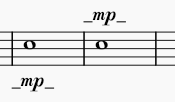
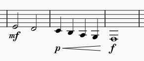
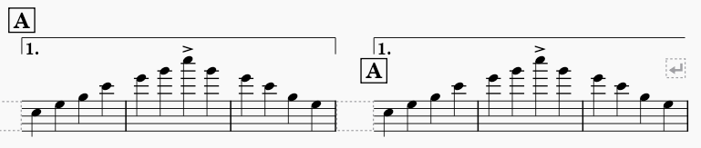
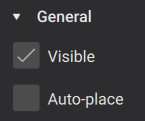
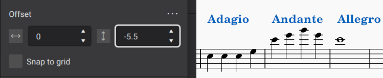

元素定位
MuseScore Studio 会根据一组规则和样式设置自动将元素放置在你的乐谱中。这些规则旨在默认产生出色的结果。元素根据标准制谱实践定位，同时避免冲突。任何给定元素的默认位置都可以自定义。
默认位置
MuseScore 中的大多数元素都有一个默认位置，该位置由可以通过属性面板或格式→样式对话框自定义的样式设置决定。对于放置在谱表上方的元素，位置指定为距谱表顶线的偏移量；对于放置在谱表下方的元素，位置指定为距谱表底线的偏移量。这些偏移量，像 MuseScore 中的大多数测量值一样，以谱表空间表示——缩写为 sp。对于许多元素类型，你可以指定放置在谱表上方时使用的偏移量，以及放置在下方时使用的单独偏移量，还可以指定默认应用哪种放置方式。
例如，对于力度记号，默认放置是在谱表下方，谱表底线下方 2.5 sp 的默认偏移量。如果你将力度记号翻转到谱表上方，它默认为谱表顶线上方 1.5 sp（表示为负偏移量：-1.5 sp）。这些设置都在 格式→样式→力度 中找到。

请注意，放置在谱表下方的力度记号的默认偏移量比上方的更大，只是因为偏移量是从文本的基线测量的。

自动放置
自动放置是 MuseScore 用于指代一组算法的术语，这些算法用于避免冲突以及自动对齐某些元素。在进行调整时，基本了解自动放置的工作原理会很有用。
垂直冲突避免
对于大多数放置在谱表上方或下方的元素，冲突避免是垂直进行的。当定位元素时，MuseScore 首先尝试根据该元素类型的默认偏移量放置它。如果这会导致与另一个元素冲突，那么两个元素之一将被移动得离谱表更远，以避免重叠。MuseScore 在确定移动哪些元素时遵循标准制谱规则。例如，速度标记放置在颤音线上方，而不是反过来。

最小距离样式设置决定 MuseScore 在以这种方式避免冲突时在元素之间放置多少距离。属性面板中相应的设置允许你在必要时针对单个元素覆盖此值。但 MuseScore 在手动定位元素时会自动调整此值，如下面的手动调整部分所示。
水平冲突避免
对于某些元素，如歌词或和弦符号，MuseScore 会加宽小节以避免冲突，而不是垂直移动这些元素。

垂直对齐
MuseScore 还会尝试垂直对齐某些元素，这样如果该类型的某个元素需要垂直调整以避免冲突，同一系统上该类型的其他元素也会自动调整。始终垂直对齐的元素包括歌词和踏板标记。力度和力度变化线如果直接相邻，也会被对齐。

如果你在和弦符号样式设置中通过设置最大位移值启用此功能，和弦符号也可以垂直对齐。有关更多信息，请参阅和弦符号。
禁用自动放置
自动放置通常能很好地避免冲突和对齐元素。在你希望手动定位元素的情况下，通常可以直接这样做，而无需禁用自动放置（请参阅下面的手动调整）。
然而，在某些情况下你可能仍希望禁用自动放置。例如，排练标记默认显示在反复跳房子上方，但你可能希望在反复跳房子已经被移得更高、其下方有空间容纳排练标记的某些特定情况下反转这种关系。

在这种情况下，禁用排练标记的自动放置可以使其显示在反复跳房子下方，同时仍然允许反复跳房子自动避免与音符冲突。
要禁用元素的自动放置，请选中它并在属性→常规中取消勾选自动放置。

元素将返回到其默认位置（由其样式设置决定），并且不会被包括在与其他元素的冲突检测中。禁用元素的自动放置还会导致其被排除在任何本应适用的垂直对齐之外。
手动调整
无论自动放置是否已将元素从其默认位置移开，元素的位置都可以通过拖动、使用光标键或属性→常规→外观中的偏移字段手动调整。有关更多信息，请参阅直接调整元素。
MuseScore 甚至允许你进行会导致冲突的手动调整。在上面的示例中，如果你将排练字母拖到反复跳房子下方，MuseScore 会允许这样做，并会自动将该元素的最小距离设置为负值，从而在不禁用自动放置的情况下有效地允许冲突。
手动对齐
相同类型的元素通常会默认对齐，只是因为它们具有相同的样式设置，因此具有相同的偏移量。然而，自动放置可能导致某些元素被移动到比其他元素离谱表更远的位置。如上面的垂直对齐所述，MuseScore 会自动对齐某些类型的元素。对于其他元素类型，你可以通过为它们分配相同的垂直偏移量来手动对齐它们。
要做到这一点，只需选择你希望对齐的元素（例如，单击第一个，Shift+单击最后一个），然后在属性面板中逐步增加或减小垂直偏移量。例如，要对齐谱表上方的一系列速度标记，你需要将它们的垂直偏移量设置为相同的值。为确保它们对齐，并避免导致自动放置最初显示其中一个或多个的冲突，你需要将偏移量设置为足够大的负值。
